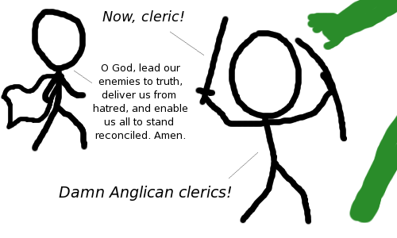

Comic JK 891
When I Feel Like It
⇤
<
?
>
⇥

⇤
<
?
>
⇥
Forum
.
RSS
.
Digg
.
Facebook
.
Reddit
.
Twitter
.
Stumbleupon
Enter your thoughts on number 891 here. Please, no spamming, trolling, phreaking, or smiting. "I wish I were an Anglican, I really wish I do. I wish I were an Anglican, not a Buddhist or a Jew I wish I were an Anglican, 'cos then i'd get to say Holy holy holy holy every hour of the freaking day! " - AMEN! >AABB is lazy garbage. Try making a dirty Anglican limerick >>poetry snob! >>>Poetry snobbery is lazy garbage! >> There once was a woman from Venus >> Who's body was shaped like a--PICARD TO SECURITY! I don't get it. > You NEVER get it, stop saying that. >> Hey, it wasn't me this time, I got it... > Go learn about rpg's, then you'll get it. I think the Pope gets some pretty good spells. >That's Catholicism >> Mind control of the ignorant masses isn't much of a trick. T-h-i-s i-s h-o-w I d-o s-p-e-l-l-s. I-f I m-i-s-t-y-p-e s-o-m-e-t-h-i-n-g i-t i-s a c-l-e-r-i-c-a-l e-r-r-o-r. >*groan* >>And already a typo. There are some good damage doing divine spells... >And there are some good supportive arcane spells... doesn't mean they're used Focus on hunting the undead!